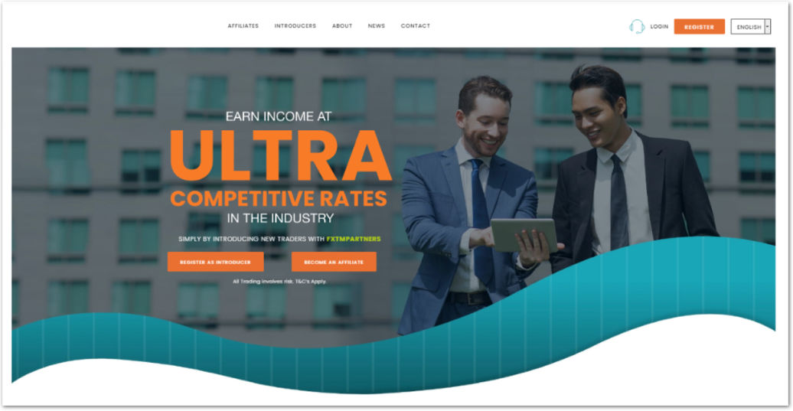
This project focused on redesigning a legacy partner portal within the online trading domain, used by affiliates who refer new traders and earn commissions based on trading activity.
The platform supported a multi-level referral model, where partners could onboard traders who could further refer others, creating a layered commission structure. Over time, the portal had become outdated, fragmented, and misaligned with current user needs and business goals.
This project was not just a visual redesign but it was a strategic rethinking of how partners interact with the platform, track performance, and grow their referral networks effectively. I joined the project at the earliest stage, during a 6 week discovery phase (internally referred to as an inception phase in the orgnaisation). The goal of this phase was to evaluate the product landscape, identify opportunities for value creation, and define a strategic direction before committing to full-scale delivery.
My Role as the UX Designer, I led the discovery efforts, which included :
- Planning and conducting user research
- Mapping current user journeys and identifying pain points
- Facilitating stakeholder workshops to align on business goals and uncover opportunities
- Creating a future-state (to-be) user journey aligned with narrowed design objectives. The outcome of this phase shaped the product roadmap, influenced prioritization decisions, and informed technical planning before we transitioned into sprint-based delivery.
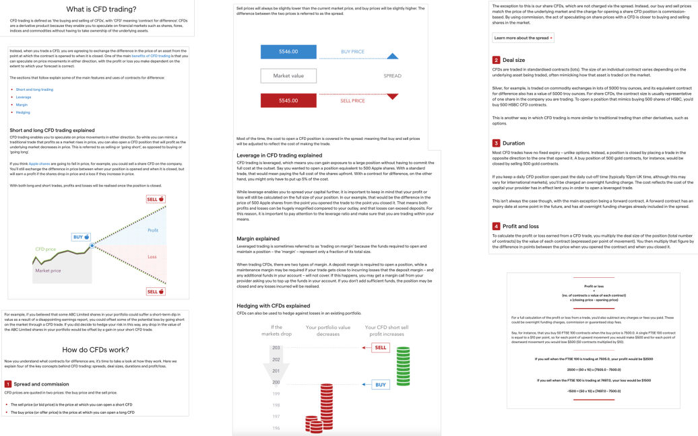
Before initiating user research, I invested time in deeply understanding the domain and the product ecosystem.
I collaborated closely with domain experts and internal stakeholders to understand:
- The fundamentals of CFD trading
- How the partner model operates
- Multi-level referral structures and commission logic
- Different partner personas and their motivations
This allowed me to speak the language of stakeholders and identify assumptions embedded in the system.
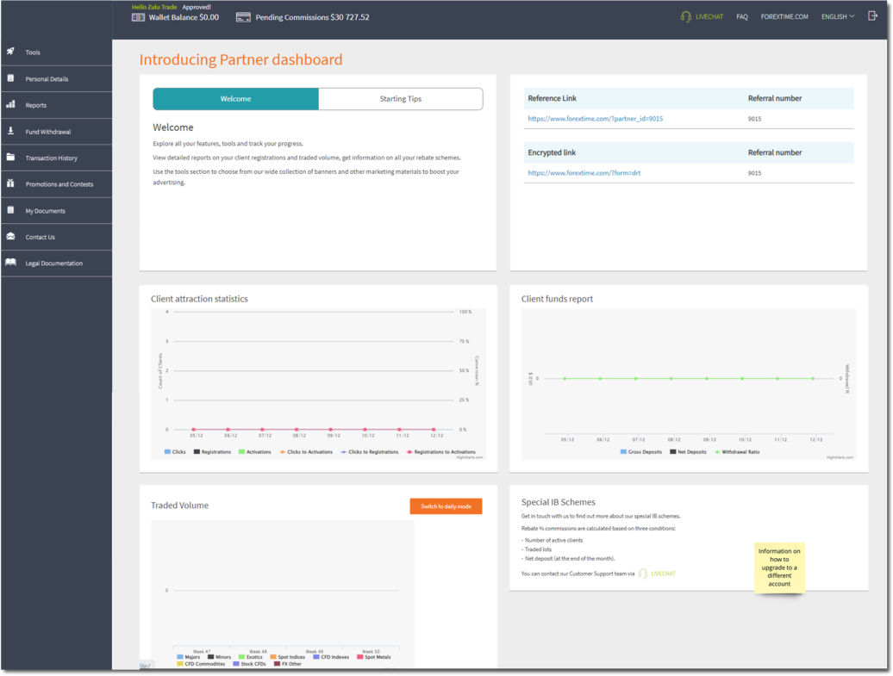
To gain hands-on understanding of the platform, I approached the product as a user before evaluating it as a designer.
- I created a dummy account to experience the onboarding flow first-hand and identify initial friction points.
- Accessed a test environment to explore core functionalities, feature depth, and system behaviour across different scenarios.
- Mapped key user activities and developed a high-level understanding of primary flows aligned with various partner goals and use cases.
-Reviewed performance dashboards, commission structures, metrics, graphs, and reporting tools to understand how data was surfaced and consumed.
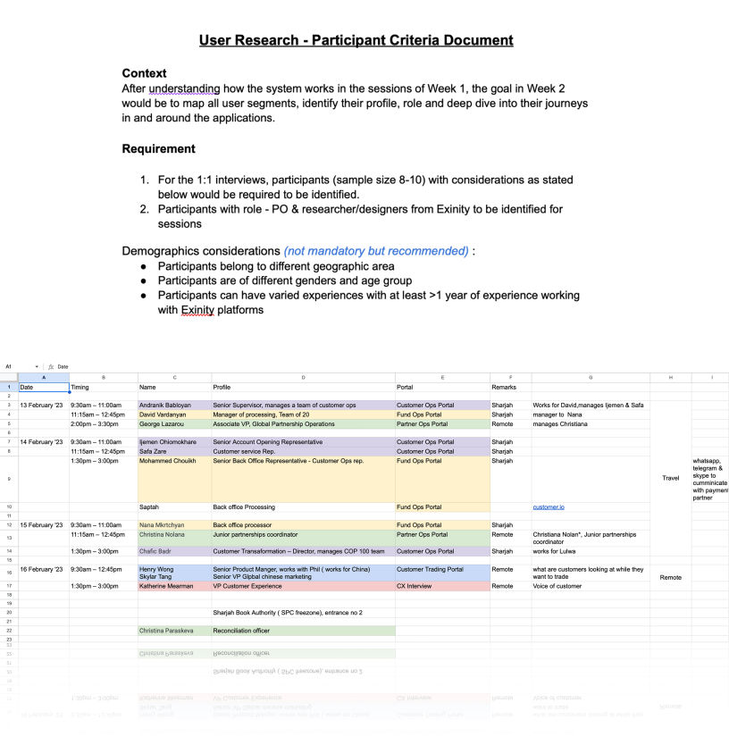
Once I had built a foundational understanding of the domain and the system, the next step was to define a focused research approach. Based on stakeholder inputs and product understanding, I identified key user segments within the partner ecosystem. These segments varied in:
- Experience level (new vs. established partners)
- Geographic markets
- Scale of referral networks
Developed a semi-structured interview guide aimed at deeply understanding users’ journeys in and around the application. The goal was not just to evaluate usability, but to uncover behavioral patterns, decision-making processes, and contextual challenges influencing how partners used the system.
For the user research, I designed a structured questionnaire for the participants, which was reviewed and approved by my Product Owner and team, incorporating their additional input.
The questionnaire was divided into several sections:
1. Introduction and Consent – I began by explaining the context of the research, obtaining consent for recording the session, and conducting brief introductions.
2. The current landscape – Next, I focused on understanding the participant’s role and key responsibilities within the organization.
3. Top tasks and Challenges – I then explored their primary and recurring tasks, along with the challenges they experience in their day-to-day work.
4. Portal Deep Dive – This was followed by a more detailed discussion of the portal, where I asked specific, targeted questions about their experience.
5. Wrap up and end note – Finally, I concluded with open-ended questions to gather additional feedback and provide participants the opportunity to share anything else they felt was relevant.
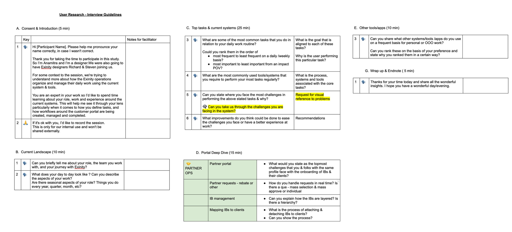
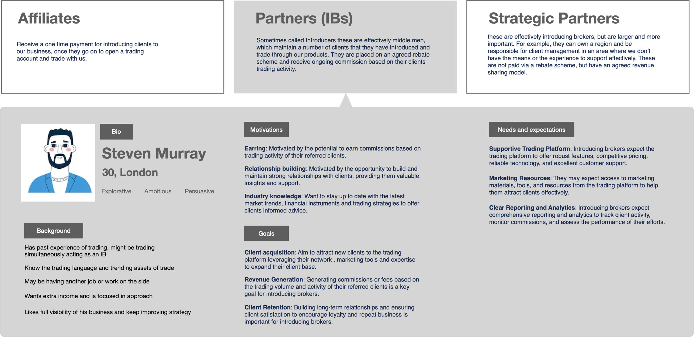
The clients provided an initial as-is journey map, which I refined and expanded by incorporating findings and observations from the user interviews. The existing as-is journey was further simplified by organizing it around specific user goals, clearly outlining the corresponding inputs and steps required to achieve each goal.
User pain points identified during the 1:1 interviews and portal deep dives were mapped to these individual goals. This approach helped highlight critical areas within the journey that require improvement and targeted intervention.
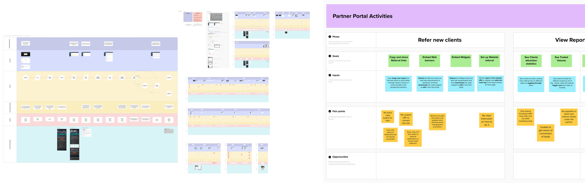
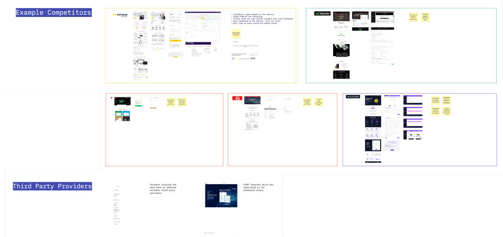
I conducted a competitor analysis of tools suggested by stakeholders to better understand the competitive landscape. I reviewed their key use cases, core offerings, and overall positioning.
I also analyzed their dashboards, focusing on structure, data presentation, and usability patterns. Notable features, strengths, and differentiating elements were documented to identify insights and opportunities that could inform our own solution design.
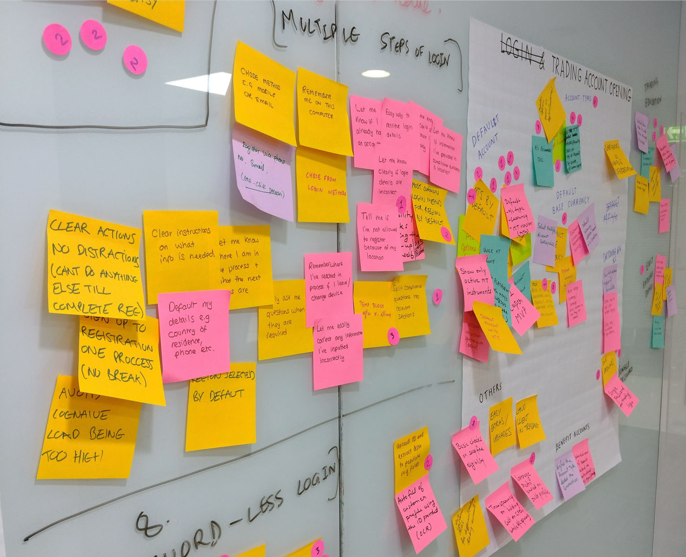
After completing the research and analysis, I facilitated a brainstorming session with stakeholders to explore opportunities aligned with the identified gaps. The user pain points were first reviewed and discussed with the broader team to better understand the underlying root causes of the issues. These were categorized into:
1. Technical constraints
2. Business decisions
3. Poor user experience and UI interactions
Following this, a collaborative brainstorming session was conducted where participants shared potential solutions. Team members wrote their ideas on sticky notes and placed them on a board.
The ideas were then clustered into groups based on similarity. Each group of solutions was evaluated through dot voting, where participants rated them using numbered stickers (1 = least preferred, 3 = most preferred). This helped prioritize the most promising directions for further exploration.
Following the stakeholder discussions and brainstorming sessions, we revisited the design brief to refine our direction. Based on the research findings and identified gaps, we defined a set of focused problem statements. All problem areas were aligned under one overarching question: How might we empower partners to maximise the potential of their business? Key Problem Areas Identified :
1. Lack of Performance Visibility
Partners do not have access to a clear overview of key performance metrics. Critical information such as rebates earned, number of clients, net deposits, and overall performance requires navigating through multiple individual reports. Additionally, there is limited transparency regarding their current tier, earning level, and how these evolve over time. This lack of upfront visibility makes it difficult for partners to track progress and plan strategically.
2. Insufficient Marketing Insights
Partners have minimal insight into the effectiveness of their digital marketing efforts. There is little visibility into which channels or campaigns drive acquisition or customer value.
As a result, they struggle to optimise their strategies, as they lack clarity on what is working and what is not.
3. Lack of Motivation and Actionable Guidance
The current product experience does not actively motivate partners to improve performance. Information is presented in complex graphs without clear actionable insights, nudges, or incentives. Partners are also unable to easily connect prospective earnings with measurable actions, such as the number of leads generated.
4. Delayed Rebate Processing
Due to manual weekly checks performed by the operations team, partners must wait up to a week for rebate approvals. Only after processing are the rebates updated in the system and made available for withdrawal. This delay reduces transparency and impacts the overall partner experience.
Based on the refined problem statements and prioritised opportunities, I reworked the existing journey into a to-be user journey flow. This updated version integrates the proposed solutions and ensures that all major use cases are clearly defined, streamlined, and aligned with partner goals.
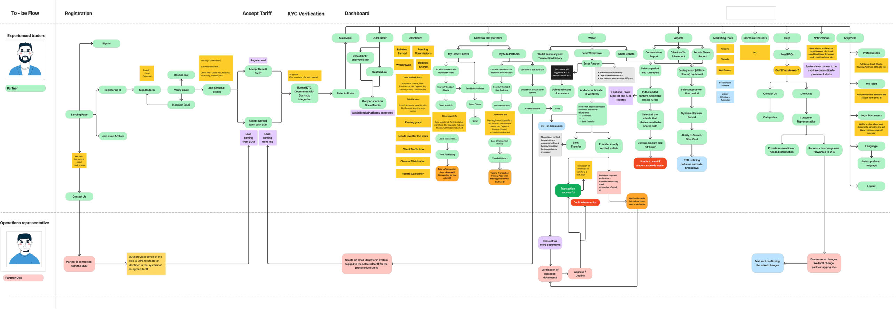
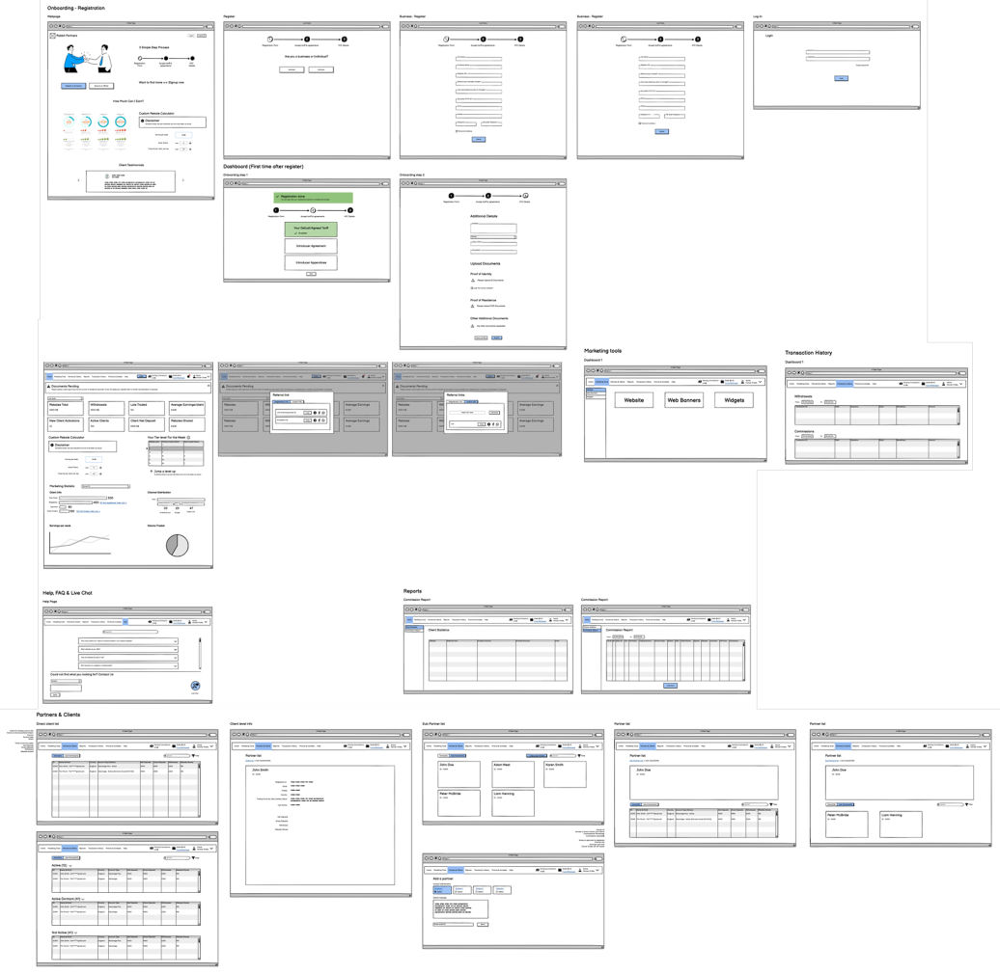
I developed the first iteration of the key user flows and presented them to stakeholders for feedback. During these discussions, we gathered input from technical and business perspectives while ensuring that the user’s needs and experience remained central to the conversation.
The feedback helped refine the flows and informed the final designs that were presented at the end of the inception phase. These designs clearly communicated what would be developed and the value it would deliver to partners.
All feedback and discussion points were documented to guide future iterations. The user flows were to be further detailed and refined during the sprint delivery phase.
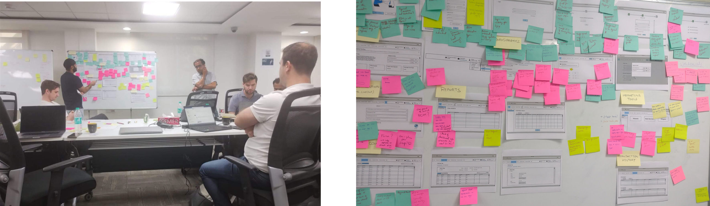
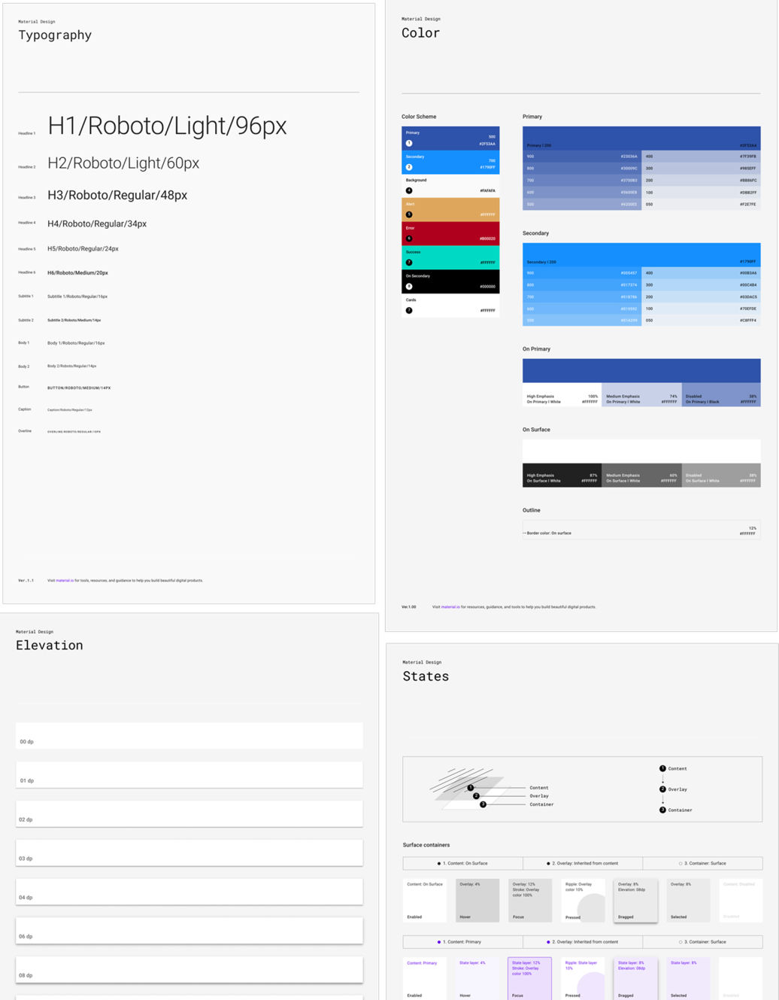
Design System Foundation
- A design system library was established using Material Design 2 as the foundation, primarily due to its compatibility with Flutter, which was a key development requirement.
- Components were customised to align with the client’s brand guidelines, including colors, typography, and visual styling, as defined by their internal marketing team.
- Additional required components that were not part of the base system were identified and designed in accordance with the same design principles and guidelines.
- A Storybook environment was created to document component usage, behaviour, states, and accessibility criteria to ensure consistency and scalability.
My Role in the Design System
- Collaborated closely with the visual designer to review the component library and identify gaps based on the functional requirements of the partner portal platform.
- Contributed to defining standards for navigation, layout structure, and interaction patterns to ensure consistency across products and touchpoints.
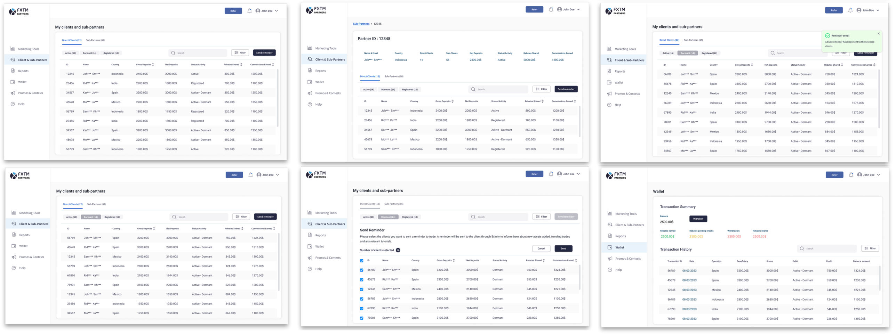
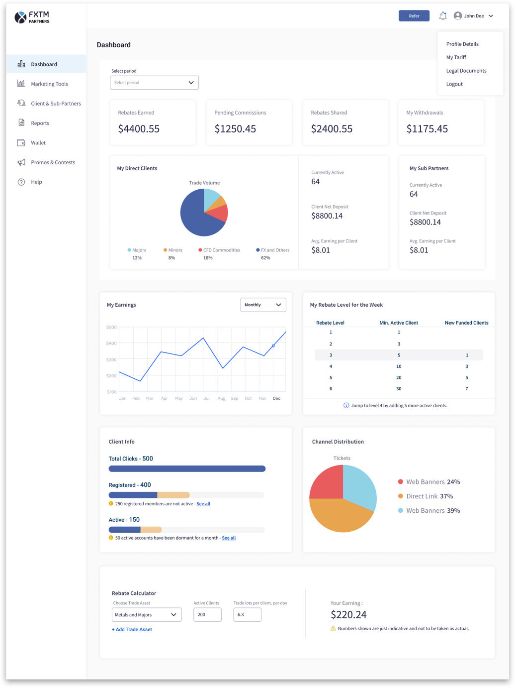
The dashboard was designed to function as a strategic control center for partners: providing clarity, encouraging growth, and enabling informed decision-making in a single, flexible interface.
Concise & Customizable Overview of Key Metrics
The legacy system forced partners to piece together earnings and network data from multiple sections. The new dashboard presents critical information at a glance — total rebates earned, withdrawals, active sub-partners, trading activity — with fully customizable widgets partners can rearrange around their goals.
Motivational Experience with Visual Progress & Nudges
Partners can see earnings trends over time, their current rebate tier, and what actions are needed to reach the next level — shifting the experience from passive reporting to active motivation.
Marketing Performance Monitoring & Planning Tools
The dashboard shows which acquisition channels perform best, and a new rebate calculator lets partners simulate potential earnings based on active clients, trading volume, and assets.
Improved User Understanding and Satisfaction
User feedback indicated a noticeable increase in satisfaction with the platform’s interface, ease of use, and clarity of information. The redesigned experience made key metrics and insights more accessible, improving overall usability and comprehension.
Optimised Workflow and Efficiency
Introducing brokers reported a reduction in cognitive load and described the referral process as more intuitive and streamlined. Users highlighted that the redesigned platform would save time and effort, enabling them to focus more on developing effective marketing strategies and maximising their referral potential.
Increased Confidence in Performance Tracking
Through user testing and interviews, introducing brokers expressed greater confidence in monitoring their referral performance. The improved visibility of key metrics and clearer data presentation allowed them to better track campaign effectiveness and make more informed, data-driven decisions